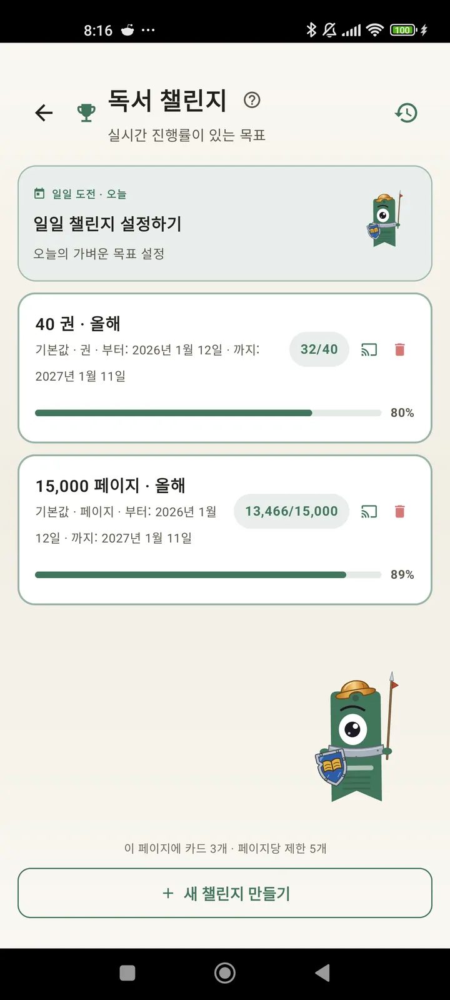

독자로서의 나를 알아가요
챌린지, Bingo, 위젯 등 독서를 제대로 즐기기 위한 다양한 기능. 3.7 새 기능: 챌린지 위젯과 Bingo 위젯.

독서 챌린지
페이지, 연속 기록, 장르별로 목표를 세워 보세요. 활성 챌린지는 무료로 15개까지, Pro로는 무제한이에요. 한도에 포함되지 않는 맞춤 일일 챌린지도 있어요.

일일 챌린지
매일 새로운 목표. 자정 전에 챌린지를 완료해서 연속 기록을 이어 가세요.

독서 Bingo
매달 테마 칸이 있는 새 Bingo 두 개. 가로줄, 세로줄 또는 판 전체를 완성해 보세요.

주간 요약
매주 월요일, 한 주를 한눈에: 읽은 페이지, 총 시간, 연속 기록, 그리고 지난주와의 비교.

월간 요약
한 달이 끝나면 Lecturameter가 정리해 줘요: 페이지, 시간, 완독한 책, 날마다의 독서 속도, 그리고 이달의 책.

Bingo 위젯 Pro
이달의 Bingo 판을 언제나 한눈에. 완료한 칸과 만든 줄이 표시돼요.

책 위젯 무료
지금 읽는 책을 홈 화면에서 바로 확인하세요: 표지, 제목, 저자, 페이지, 진행률이 항상 최신으로 표시돼요. 원하는 곳에 맞게 크기를 조절할 수 있어요.
진짜 이 앱은 치료 같아요. 하루에 두어 페이지 읽던 제가 이제 하루 20페이지쯤 읽고, 계속 늘고 있어요이메일로 받은 사용자 의견

월별 비교 Pro
앱을 열지 않고도 최근 몇 달을 빠르게 확인하세요. 달마다 읽은 페이지를 막대로 보여 주고 이번 달은 강조되어서, 지난달보다 잘하고 있는지 한눈에 알 수 있어요.

챌린지 위젯 Pro
진행 중인 챌린지와 진행률을 홈 화면에서. 표시할 챌린지는 챌린지 화면에서 고를 수 있어요.